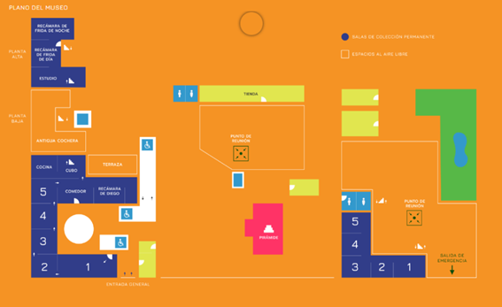

Como un gesto para rendir tributo a la vida, obra y personalidad de esta singular artista, la famosa Casa Azul fue convertida en el Museo Frida Kahlo en 1958, apenas cuatro años después de su muerte. La casa fue ampliada y remodelada por el arquitecto Juan O’Gorman, también responsable del diseño de la Casa-Estudio Diego Rivera y Frida Kahlo.
Este fue, sin duda, un gran gesto de reconocimiento a quien fuera una de las figuras más influyentes de México.
La Casa Azul, aquella donde ella nació y vivió su infancia y gran parte de su vida adulta, es hoy un testimonio vivo de sus memorias. Objetos cotidianos, juguetes, materiales, herramientas, fotografías y obras muestran la riqueza incalculable del mundo de Frida Kahlo.
La Casa Azul
Localizacion
Museo Frida Kahlo "La Casa Azul"
Museo Diego Rivera "Anahuacalli"
